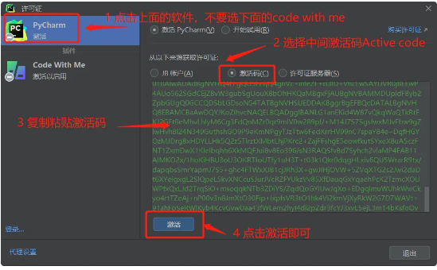
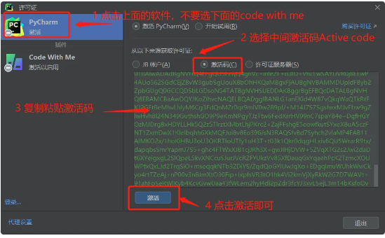
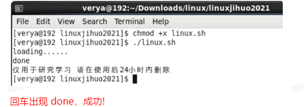

3. 复制粘贴激活码
Linux需要重启系统，重启后，打开2023 文件夹里的 激活码.txt，选择对应软件的激活码，复制粘贴如下图：
PS：激活码要选择对应软件的，Pycharm、idea等每个软件激活码是单独的；

2023版本不像2021显示 2099年，实际上可以永久使用，这儿的时间只是数字，市场上2099 5000均是认为修改，不代表真实时间。
注意： 仅支持官网专业版2020-2024的激活。不支持社区版toolbox下载的
百度云盘下载激活文件 点击下载
提取码: hhot
根据自己的系统选择不同的激活工具
选择for_win.zip下载并解压
解压完毕后，找到激活需要激活软件对应的vbs文件并双击运行
双击vbs脚本前：先打开一次你的软件，然后关闭即可。记得关闭软件后-再双击脚本哦。
软件执行成功提示，怎么看激活成功了没请看下文的三. 激活成功部分
如果激活失败，请检查下面原因：
a. 如果双击提示:
b. 激活失败首先检查这3点:
i. 提示success了吗
提示后，要重启软件
ii. 是官网专业版吗（不支持社区版和ToolBox的），去官网下载专业版
iii. 是2020-2023版本吗，如果是2018-2019的，请看下文相关的介绍
c. 如果您之前倒腾过其他破解方式或者其他店里的，请先使用下面的
注意：文件仅自动删除网上通用激活jetbrains所添加的环境变量，不做其他任何操作，放心食用！
i. 下载该文件并解压
ii. 双击vbs文件
iii. 重新上述的激活操作
选择for_mac.zip下载并解压
解压后使用终端打开文件夹
运行脚本，输入对应软件的命令-回车
注意：运行命令前，先打开你要激活的软件。然后关闭软件，最后输入命令激活软件哦。
如果你要激活idea： 则输入 sh idea.sh
如果你要激活pycharm： 则输入 sh pycharm.sh
如果你要激活datagrip： 则输入 sh datagrip.sh
如果你要激活clion： 则输入 sh clion.sh
如果你要激活goland： 则输入 sh goland.sh
如果你要激活webstorm： 则输入 sh webstorm.sh
如果你要激活phpstorm： 则输入 sh phpstorm.sh
如果你要激活dataspell： 则输入 sh dataspell.sh
如果你要激活rider： 则输入 sh rider.sh
激活成功提示，有效期怎么查看请看下文 三. 激活成功 部分
如果您之前倒腾过其他破解方式或者其他店里的，请先使用下面的
注意：文件仅自动删除网上通用激活jetbrains所添加的环境变量，不做其他任何操作，放心食用！
i. 下载该文件并解压
ii. 使用终端打开并执行下面两行指令
iii. 执行结束，输出“done”后，重启一下电脑，再重复激活步骤。
chmod +x rowback.sh
sh rowback.sh
● 本教程适用于 JetBrains 全系列产品，包括 Pycharm、IDEA、WebStorm、Phpstorm、Datagrip、CLion等。
● 教程以Pycharm为例，其他工具通用，界面菜单位置均相同！~
chmod +x install.sh
./install.sh
3. 复制粘贴激活码
Linux需要重启系统，重启后，打开2023 文件夹里的 激活码.txt，选择对应软件的激活码，复制粘贴如下图：
PS：激活码要选择对应软件的，Pycharm、idea等每个软件激活码是单独的；

2023版本不像2021显示 2099年，实际上可以永久使用，这儿的时间只是数字，市场上2099 5000均是认为修改，不代表真实时间。
本教程适用于 JetBrains 全系列产品，教程以Pycharm为例 ，IDEA、WebStorm、Phpstorm、Datagrip、CLion 等通用，界面菜单位置均相同。
百度云盘下载激活文件 点击下载
提取码: cool
根据自己的系统选择不同的激活工具
1、下载激活文件，解压到本地，解压后目录如下：
以2021为例，打开如下：
2、双击【一键工具.vbs】
出现弹窗显示success即可（过程需要几秒）
【vbs文件只是为了简化操作，避免同学操作失误，请放心食用】
3、重启软件
打开后软件即激活成功!
验证激活：新建一个项目 或 打开已有项目，进入主界面,选help 菜单 --> register选项
看到已经激活至2099年！
chmod +x mac.sh
./mac.sh
3. 重启软件，已经激活成功了，验证激活效果
随便新建 或者 打开一个项目，点菜单Help-->register，查看已激活至2099年！
chmod +x linux.sh
./linux.sh
实际界面如下 注意空格，注意别输错单词：

3. 重启软件，复制粘贴激活码
将文件夹中 activation code.txt 的内容复制粘贴到Activation code区域
时间显示2099、2025年都是永久使用的，请放心使用！
只要显示有（you hava perpetual fallback license for this version）
不用管时间显示问题，不卸载就能用，放心使用哈。
查看方式一: 点击左下角小齿轮->点击Manage Licences
查看方式二: 菜单栏 help（帮助）->Rigister(注册)
我们承诺售后保证，但为了您的稳定使用，建议关闭自动更新：
点击 File(文件)-->settings（设置）
选择Appearance&Behavior（外观与行为）-->System Settings（系统设置）-->updates（更新）
有同学疑问为什么不要输入激活码? 科普下：
软件激活后，会在当前用户所在生成key文件；
我们 直接用生成后的key文件，通过系统自带的批处理命令直接放到软件目录中，无需手动，简化操作；
成功后，随便打开或新建一个项目进入开发界面，可以在顶部菜单栏Help菜单register选项查看【激活码】（有的版本需要点Remove License->activation code才能看到，慎点！！！当心手残给完全清除了）
最后，祝您使用愉快！